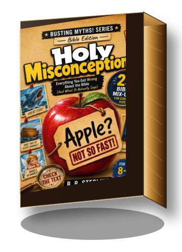

Reader fit
For curious kids, preteens, and guided family reading moments where Bible questions should feel engaging rather than intimidating.
RELIGIOUS / FOR CHILDREN & TEENS
Everything You Got Wrong About the Bible (And What It Actually Says)
A curiosity-first Bible book from the Busting Myths! Series, built around 25 memorable mix-ups for kids ages 8–12 and faith conversations with families or older students.

For curious kids, preteens, and guided family reading moments where Bible questions should feel engaging rather than intimidating.
Case-file styling, bold cover cues, and quick “myth vs. text” framing make the concept easy to understand at a glance.
Each misconception invites readers to slow down, check the source, and discover what the Bible actually says.